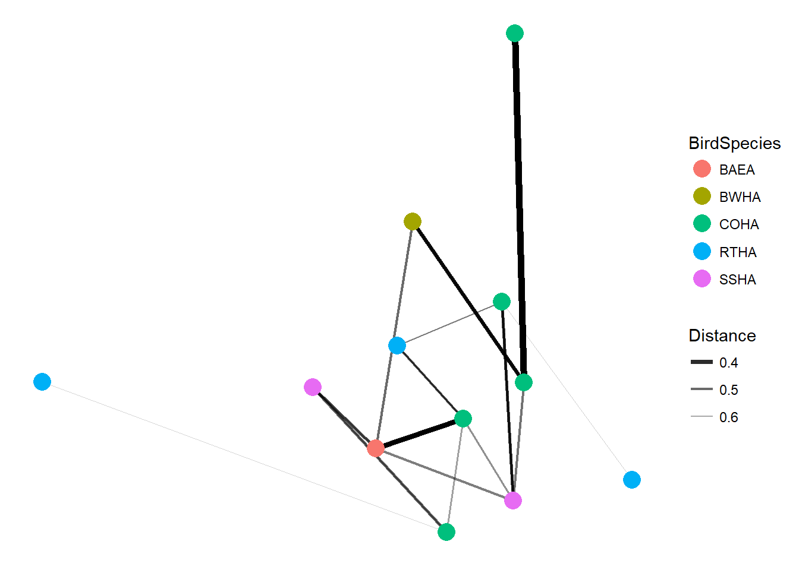

16S data analysis example
JReceveur
May 8, 2017
Package Install
If you need to install the packages remove the #, once the packages are installed, you do not need to run this step again
#source('http://bioconductor.org/biocLite.R')
#biocLite('phyloseq')
#install.packages("ggplot2")
#install.packages("vegan")
packageVersion('phyloseq')## [1] '1.22.3'Data import
Download the data file. You can either browse for the datafile with the first import command(just remove the #), or specify the path name (Yours will depend on where you saved your file).The datafile already has the metadata, taxonomy, and abundances joined together for all taxonomic levels. Load the phyloseq package and ggplots2 and set the plotting theme.
library(phyloseq)
library(ggplot2)
library(vegan)## Loading required package: permute## Loading required package: lattice## This is vegan 2.4-4theme_set(theme_bw())
#biom=import_biom(file.choose(),parseFunction=parse_taxonomy_greengenes)
biom=import_biom('C:\\Users\\Joe Receveur\\Documents\\GitHub\\WallaceHippo\\hipp.biom',parseFunction=parse_taxonomy_greengenes)
biom## phyloseq-class experiment-level object
## otu_table() OTU Table: [ 238 taxa and 14 samples ]
## sample_data() Sample Data: [ 14 samples by 4 sample variables ]
## tax_table() Taxonomy Table: [ 238 taxa by 11 taxonomic ranks ]Since the .biom file already has metadata added, lets check and see what the samples are named and what variables are in the metadata.
sample_names(biom)## [1] "Hipp5" "Hipp8" "Hipp6" "Hipp11" "Hipp1" "Hipp9" "Hipp13"
## [8] "Hipp14" "Hipp10" "Hipp3" "Hipp12" "Hipp2" "Hipp4" "Hipp7"sample_variables(biom)## [1] "BarcodeSequence" "Description" "LinkerPrimerSequence"
## [4] "Species"Since one of the sample variables is Species, we’ll remove some confusion since there is also a taxonomic rank called Species by creating a new variable “Bird Species” and look at the metadata again just to be sure everything matches up.
sample_data(biom)$BirdSpecies=sample_data(biom)$Species
sample_variables(biom)## [1] "BarcodeSequence" "Description" "LinkerPrimerSequence"
## [4] "Species" "BirdSpecies"#sample_data(biom) use this command to see all the metadataVisualizing the raw sample data
Before we try to do anything, its probably a good idea to look at a plot of the raw data. Once you plot the data, you’ll see that the vast majority of the samples are from the family Enterobacteriaceae and that the total abundances for the samples don’t add up. We’ll change that in a bit. You’ll also see a warning message about the species variable being changed but you can ignore it.
plot_bar(biom, "BirdSpecies","Abundance", "Family")## Warning in psmelt(physeq): The sample variables:
## Species
## have been renamed to:
## sample_Species
## to avoid conflicts with taxonomic rank names.Removing Enterobacteria
Now we’ll look at the data with Enterobacteria removed. When you run the noentero command, you can see a difference in the taxa in the OTU table compared to previously. If you would like a subset only from one family use the command Family==“Staphylococcaceae” for example.
noentero=subset_taxa(biom, Family!="Enterobacteriaceae")
noentero## phyloseq-class experiment-level object
## otu_table() OTU Table: [ 126 taxa and 14 samples ]
## sample_data() Sample Data: [ 14 samples by 5 sample variables ]
## tax_table() Taxonomy Table: [ 126 taxa by 11 taxonomic ranks ]When we plot the data with Enterobacteriacea removed, notice how much smaller the abundance values are than the previous plot and the differences in taxa compared to the biom file.
plot_bar(noentero, "BirdSpecies","Abundance", "Family")## Warning in psmelt(physeq): The sample variables:
## Species
## have been renamed to:
## sample_Species
## to avoid conflicts with taxonomic rank names.
Relative Abundances
Now we’ll normalize each sample to turn it into relative abundances for each sample. The second transform sample counts will turn the filtered data back into 100% abundances, if you leave it out and then plot, its a good way to see how much abundance the filtering is removing.
Hipp = transform_sample_counts(noentero, function(x) x / sum(x) )
Hipp = filter_taxa(Hipp, function(x) mean(x) > 1e-2, TRUE)
HippFiltered = transform_sample_counts(Hipp, function(x) x / sum(x) )
HippFiltered## phyloseq-class experiment-level object
## otu_table() OTU Table: [ 26 taxa and 14 samples ]
## sample_data() Sample Data: [ 14 samples by 5 sample variables ]
## tax_table() Taxonomy Table: [ 26 taxa by 11 taxonomic ranks ]sample_variables(HippFiltered)## [1] "BarcodeSequence" "Description" "LinkerPrimerSequence"
## [4] "Species" "BirdSpecies"With the next bit of code, you’ll see that the Abundances are in multiples of one, it just depends on how many samples there was from each bird species.
plot_bar(HippFiltered,"BirdSpecies", "Abundance","Family")## Warning in psmelt(physeq): The sample variables:
## Species
## have been renamed to:
## sample_Species
## to avoid conflicts with taxonomic rank names.Now we’ll merge together all the samples from within a bird species to get an average.The merge function renames the samples by the variable Species so we have to add it back in as a sample variable after merging. You’ll see a warning message NAS introduced… after the first step but the second step “repairs” the metadata.
Merged=merge_samples(HippFiltered, "Species")
sample_data(Merged)$BirdSpecies <- factor(sample_names(Merged))
Merged=transform_sample_counts(Merged,function(x) 100 * x/sum(x))Now we’ll plot relative abundance by each bird species.
plot_bar(Merged, "BirdSpecies", "Abundance", "Family")## Warning in psmelt(physeq): The sample variables:
## Species
## have been renamed to:
## sample_Species
## to avoid conflicts with taxonomic rank names.
NMDS plots
Now, we’ll make some NMDS plots of the data using bray curtis. First, we need to run the ordination.For more detailed distance options see https://joey711.github.io/phyloseq/distance.html
Hipp.ord=ordinate(HippFiltered, "NMDS", "bray")## Run 0 stress 0.1237196
## Run 1 stress 0.1557353
## Run 2 stress 0.1215456
## ... New best solution
## ... Procrustes: rmse 0.2011982 max resid 0.3752674
## Run 3 stress 0.1215409
## ... New best solution
## ... Procrustes: rmse 0.0007569905 max resid 0.001912477
## ... Similar to previous best
## Run 4 stress 0.1475528
## Run 5 stress 0.1675967
## Run 6 stress 0.1215342
## ... New best solution
## ... Procrustes: rmse 0.003629758 max resid 0.009412449
## ... Similar to previous best
## Run 7 stress 0.1215365
## ... Procrustes: rmse 0.00122879 max resid 0.003162949
## ... Similar to previous best
## Run 8 stress 0.1484238
## Run 9 stress 0.1237192
## Run 10 stress 0.148437
## Run 11 stress 0.1215414
## ... Procrustes: rmse 0.003638536 max resid 0.009409709
## ... Similar to previous best
## Run 12 stress 0.1423667
## Run 13 stress 0.1237154
## Run 14 stress 0.1359681
## Run 15 stress 0.1496386
## Run 16 stress 0.135968
## Run 17 stress 0.1286316
## Run 18 stress 0.1543173
## Run 19 stress 0.1237162
## Run 20 stress 0.1475533
## *** Solution reachedNow we’ll plot the samples by Bird Species
plot_ordination(HippFiltered,Hipp.ord,type="samples",color="BirdSpecies")+geom_point(size=5)+ggtitle("NMDS by Bird Species")plot heatmap
Now we’ll plot a heatmap by Bird Species and sort the samples as well. The default is to group samples by their distances, so if you want to see them by distance, remove the sample.order= command. You’ll see warning about infinite values as well but for now it can be ignored.
plot_heatmap(HippFiltered, "NMDS","bray","BirdSpecies", "Family", sample.order="BirdSpecies")## Warning in psmelt(physeq): The sample variables:
## Species
## have been renamed to:
## sample_Species
## to avoid conflicts with taxonomic rank names.## Warning: Transformation introduced infinite values in discrete y-axisPERMANOVA
For running a PERMANOVA we will need some functions from the vegan package
Hippdist=phyloseq::distance(HippFiltered, "bray")If we want to test for significant differences between bird species.For this preliminary dataset we probably don’t have enough power to see anything, but heres the code anyway.
adonis(Hippdist ~ BirdSpecies, as(sample_data(HippFiltered), "data.frame"))##
## Call:
## adonis(formula = Hippdist ~ BirdSpecies, data = as(sample_data(HippFiltered), "data.frame"))
##
## Permutation: free
## Number of permutations: 999
##
## Terms added sequentially (first to last)
##
## Df SumsOfSqs MeanSqs F.Model R2 Pr(>F)
## BirdSpecies 4 0.8402 0.21005 0.65247 0.2248 0.967
## Residuals 9 2.8973 0.32193 0.7752
## Total 13 3.7375 1.0000Network plot
Heres a simple network plot of the bird samples showing the distance between samples.
plot_net(HippFiltered, color="BirdSpecies")
For more info on the phyloseq package visit joey711.github.io/phyloseq/
## R version 3.4.2 (2017-09-28)
## Platform: x86_64-w64-mingw32/x64 (64-bit)
## Running under: Windows 10 x64 (build 14393)
##
## Matrix products: default
##
## locale:
## [1] LC_COLLATE=English_United States.1252
## [2] LC_CTYPE=English_United States.1252
## [3] LC_MONETARY=English_United States.1252
## [4] LC_NUMERIC=C
## [5] LC_TIME=English_United States.1252
##
## attached base packages:
## [1] stats graphics grDevices utils datasets methods base
##
## other attached packages:
## [1] vegan_2.4-4 lattice_0.20-35 permute_0.9-4 ggplot2_2.2.1
## [5] phyloseq_1.22.3
##
## loaded via a namespace (and not attached):
## [1] Rcpp_0.12.13 compiler_3.4.2 plyr_1.8.4
## [4] XVector_0.18.0 iterators_1.0.8 tools_3.4.2
## [7] zlibbioc_1.24.0 digest_0.6.12 tibble_1.3.4
## [10] jsonlite_1.5 evaluate_0.10.1 nlme_3.1-131
## [13] rhdf5_2.22.0 gtable_0.2.0 mgcv_1.8-20
## [16] pkgconfig_2.0.1 rlang_0.1.4 igraph_1.1.2
## [19] Matrix_1.2-11 foreach_1.4.3 yaml_2.1.14
## [22] parallel_3.4.2 stringr_1.2.0 knitr_1.17
## [25] cluster_2.0.6 Biostrings_2.46.0 S4Vectors_0.16.0
## [28] IRanges_2.12.0 multtest_2.34.0 stats4_3.4.2
## [31] rprojroot_1.2 ade4_1.7-8 grid_3.4.2
## [34] Biobase_2.38.0 data.table_1.10.4-3 survival_2.41-3
## [37] rmarkdown_1.7 reshape2_1.4.2 magrittr_1.5
## [40] MASS_7.3-47 splines_3.4.2 backports_1.1.1
## [43] scales_0.5.0 codetools_0.2-15 htmltools_0.3.6
## [46] BiocGenerics_0.24.0 biomformat_1.6.0 ape_5.0
## [49] colorspace_1.3-2 labeling_0.3 stringi_1.1.5
## [52] lazyeval_0.2.1 munsell_0.4.3